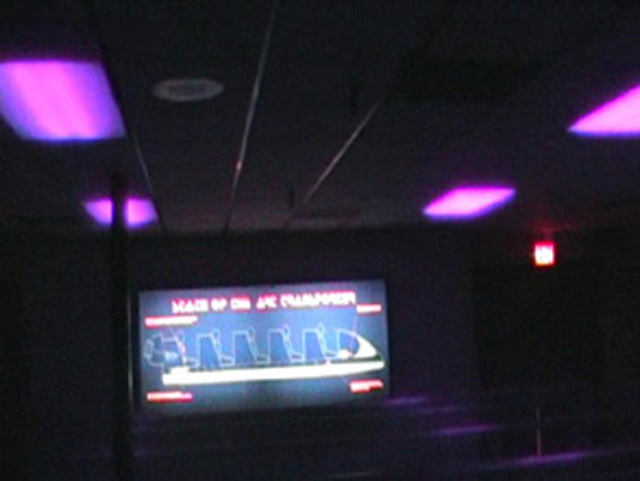

| |

Disaster Transport Review

For todays review, we're going to travel back in time to review Cedar Point's dead indoor bobsled, Disaster Transport. Ok, so now we're back in time to July of 2007, the last time I last rode this coaster. But before I talk about the ride, I'm going to explain a very stupid rule this ride had. You know about Cedar Point's stupid rain policy. Well guess what? It applied to Disaster Transport. So even if your coaster is in a building, you still had to close it in the rain. Now I have heard people say They had to close it in the rain because the roof leaks and Bobsleds can NEVER run in the rain. Well why didn't Cedar Point, oh I don't know, FIX THE ROOF SO IT DOES NOT LEAK!!!!!!? IS IT THAT HARD TO FIGURE OUT!!!? Well in the end, they demolished it along with the entire ride, so its pretty pointless to ponder over this question. Anyways, onto Disaster Transport. Now I don't remember too much about the ride itself. There were these red lights flashing and you boarded your car. Then you climbed the lifthill. From there on, I just remember some swaying in the dark. Then we reach a sign that reads "Welcome to Alaska." And if you haven't groaned in disgust about being reminded that Sarah Palin exists, you're probably thinking "What the hell does this have to do with anything?". Then again, I didn't get Disaster Transport. It was a fun ride. A f*cked up one at that, but it had air conditioning and was a credit. So, that was a plus.
5/10
Location: Cedar Point
Opened as Avalanche Run in 1985.
Remodled into Disaster Transport in 1989.
Demolished in 2012.
Built by: Intamin
Last Ridden: July 25, 2007
Disaster Transport Photos

Home
|